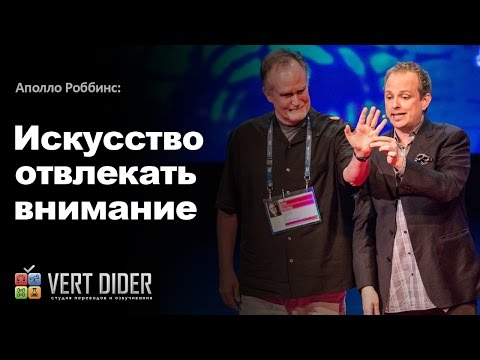
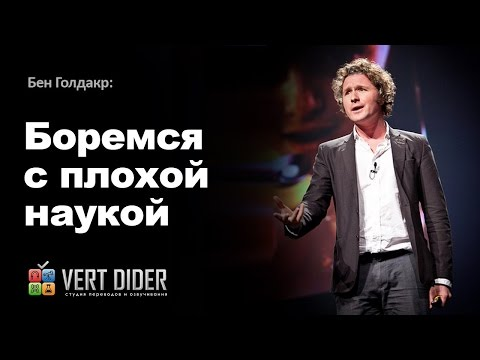
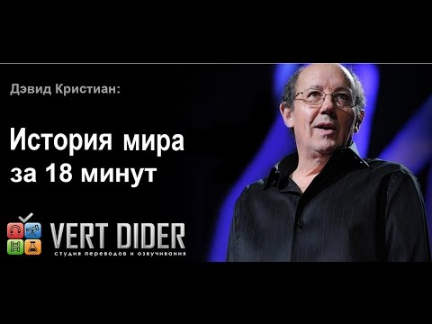

|  |
Искусство отвлекать вниманиеВеличайший карманник в мире Аполло Роббинс ловко выхватывает бумажники, изучая при этом особенности поведения людей. В своём весёлом выступлении Роббинс на примере зала TEDGlobal — 2013 показывает, как выборочность восприятия помогает стащить бумажник и положить его на плечо хозяина, который даже не подозревает об этом. |
|  |
Боремся с плохой наукойБен Голдакр рассказывает о некачественных исследованиях. |
|  |
История мира за 18 минВ захватывающем 18-минутном выступлении на фоне великолепных иллюстраций Дэвид Кристиан излагает всю историю Вселенной от Большого Взрыва до Интернета. Эта «долгая история» — взгляд на многозначность, сложные системы, происхождение жизни и человечества, в сравнении с нашим скромным присутствием в хронологии вселенной. |